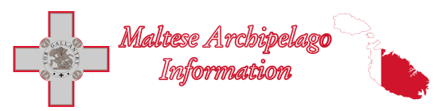

Culture Section
Original Articles
- Ode to Malta Written by Julian on the 2nd of May, 2021
Web Resources
- Dictonary of Sydney - Malta an article discussing the history of Maltese migration into Sydney Australia.
- Ozmalta Monthly Maltese newsletter, for the Maltese diaspora across the world.
- National Library of Australia - Maltese-Australian folklife and social history project A list of oral interviews, conducted by Barry York, on Maltese migrants and their experiences in Australia.
- Gday Malta Aussie show A show produced weekly by Joe Borg, about Malta, for the Maltese dispora in Sydney.
- Father Julian's Blog A blog written by Maltese born Catholic priest, Father Julian. Good insights into Malta, Christianity and life.
- Mark Camilleri Website. Website attributed to Mark Camilleri, a Maltese author. Has written books on Maltese history, and has a blog where he writes about current affairs.
- Simon Mercieca Website. A historian, who writes about Maltese politics.
- Maltese Bible Translation Full translation of the bible in Maltese. Aprocrypha is also included.
- Laikos A Catholic website in the Maltese Language.
- Grandayy Malta YouTube channel of famous youtuber, Grandayy, in Maltese.
- English Man in Malta A YouTube channel vlogging around Malta. Very good channel for viewing footage of Malta.
- Qwiel Maltin: Maltese Proverbs A list of Maltese proverbs, with English translations included.